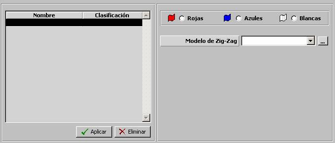
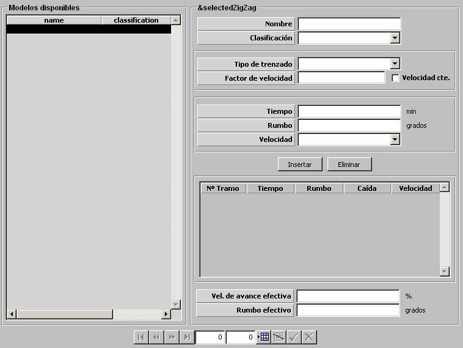

Planes ZigZag

Mediante esta tabla se especifican todos los Planes Zig‑Zag incluidos en el Ejercicio, clasificados por bando. Durante la ejecución del ejercicio, las unidades de superficie y submarinas podrán seleccionar para su ejecución automática uno de los Planes Zig‑Zag de su bando.
Modelo de Zig-Zag: Mediante este parámetro se determina el modelo de Zig-Zag. Los Planes Zig‑Zag se especifican mediante el siguiente diálogo, que se abre desde el botón junto a este campo:

Tipo de Trenzado: Ninguno, Estrecho o Ancho.
Factor Velocidad: Este parámetro determina la relación entre la velocidad alta y baja del Plan Zig‑Zag. Sólo podrá ser introducido si NO se ha seleccionado Velocidad Constante.
Velocidad Constante: Este parámetro determina si el Plan Zig‑Zag se realiza a velocidad contaste (todos los tramos a la misma velocidad) o no.
Para insertar un nuevo tramo, el operador debe introducir los valores de Tiempo, Rumbo y Velocidad del tramo en los campos correspondientes y pulsar Insertar. Los tramos insertados se muestran en la lista. Para modificar un tramo, debe hacer doble clic sobre dicho tramo en la lista, con lo cual se muestran los valores de Tiempo, Rumbo y Velocidad del tramo en los campos correspondientes, modificar los valores y pulsar insertar. Para eliminar un tramo, se debe seleccionar el tramo en la lista y pulsar Eliminar.
Para cada tramo del Plan Zig-Zag se introduce y / o muestra en la lista los siguientes datos:
Nº de Tramo: Numeración automática del tramo. Este campo es no editable.
Tiempo: Instante en el que comienza a ejecutarse este tramo, respecto a la hora cero.
Rumbo: Rumbo del tramo.
Caída: Diferencia de rumbo con respecto al rumbo base, calculada automáticamente a partir del rumbo. Este campo es no editable.
Velocidad: Velocidad del tramo. Sólo podrá ser introducido si no se ha seleccionado Velocidad Constante. Puede tomar los siguientes valores:
Velocidad de Avance Efectiva: Este parámetro es no editable y se calcula automáticamente a partir de los datos de los tramos introducidos. Representa el tanto por ciento de avance conseguido con el Plan Zig-Zag respecto a un avance en línea recta. Sólo se muestra si previamente se ha introducido el Factor Velocidad.
Rumbo Efectivo: Este parámetro es no editable y se calcula automáticamente a partir de los datos de los tramos introducidos. Representa la desviación sobre el rumbo base del Plan Zig-Zag. Sólo se muestra si previamente se ha introducido el Factor Velocidad.